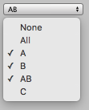

| position | 屏幕上用于枚举标志字段的矩形。 |
| label | （可选）显示在枚举标志字段前的标签。 |
| enumValue | 枚举标志值（仅支持以 int 为基础类型的枚举类型的枚举值）。 |
| style | 可选 GUIStyle。 |
| includeObsolete | 设置为 true 将使 ObsoleteAttribute 附带枚举值。设置为 false 将使 ObsoleteAttribute 不附带枚举值。 |
Enum 用户修改的枚举标志值。这是一个选择位掩码，其中每个位代表一个枚举值索引。（请注意，此返回值不是枚举本身。）
Displays a menu with an option for every value of the enum type when clicked. An option for the value 0 with name "Nothing" and an option for the value ~0 (that is, all bits set) with the name "Everything" are always displayed at the top of the menu. The names for the values 0 and ~0 can be overriden by defining these values in the enum type.
Note: This method only supports enums whose underlying types are supported by Unity's serialization system (sbyte, short, int, byte, ushort, or uint). For enums backed by an unsigned type, the "Everything" option should have the value corresponding to all bits set (i.e. ~0 in an unchecked context or the MaxValue constant for the type).

显示枚举标志字段的简单编辑器窗口。
using UnityEditor; using UnityEngine;
class EnumFlagsFieldExample : EditorWindow { enum ExampleFlagsEnum { None = 0, // Custom name for "Nothing" option A = 1 << 0, B = 1 << 1, AB = A | B, // Combination of two flags C = 1 << 2, All = ~0, // Custom name for "Everything" option }
ExampleFlagsEnum m_Flags;
[MenuItem("Examples/EnumFlagsField Example")] static void OpenWindow() { GetWindow<EnumFlagsFieldExample>().Show(); }
void OnGUI() { m_Flags = (ExampleFlagsEnum)EditorGUI.EnumFlagsField(new Rect(5, 5, 300, 20), m_Flags); } }